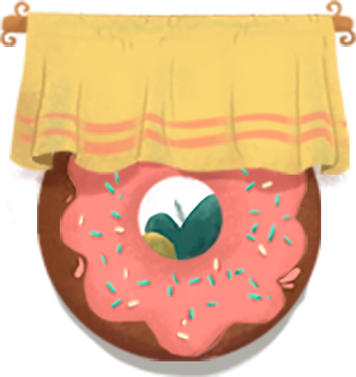

概述
儿童孤独症是发病于婴幼儿时期的精神发育障碍性疾病，
以社会交往障碍、交流障碍、活动内容和兴趣局限、
刻板重复的行为方式为基本特征，多数患儿伴有不同程度的精神发育迟滞。
呼吁!
世界自闭症关注日”提醒人类社会：应该实现自闭症患者与普通人间的相互尊重、相互理解与相互关心。
每一个特殊儿童背后都伴随一个悲伤的家庭，因为不知道孩子托付给谁，千万孤独症孩子家长那个的心愿就是：
比孩子多活一天，所以最后想说一句：与“星星的孩子”同行，让他们不再孤单！